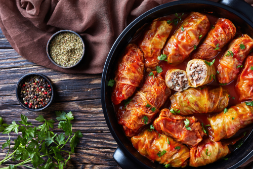

Sarmale, the Holy Grail of Romanian dishes!

No, seriously, those are the best dish you can ask from a romanian, if you are hungry and want to see a big smile on their face!
Also known as Stuffed Cabbage Rolls, Sarmale delivers your most expected taste from the best dish Romania ever made. The perfect balance between sour and sweet, they are easy to made, yet hard to cook!
Ingredients:
- Onion finely cut in pieces;
- Pickled Cabbage Leaves, Simple Cabbage Leaves or Vine Leaves at your choice;
- Long grain Rice
- Ground Beef
- Bacon
- Dill
- Parsley
- Oil
- Tomato Juice
- Salt, Pepper
Preparation:
- Heat the oil in a skillet over medium-high. Saute the onions until translucent, then add the rice and toast for 2-3 minutes. Add tomato juice, leave it for 3 minutes and then take the composition and place it in a bowl.
- Add the pork, salt, pepper, parsley, dill, and mix well. After the composition is well mixed, take the leaves of your choise and stuff them, in a rolling manner.
- Chop up the remaining cabbage leaves, place them at the bottom of a large pot or deep roasting dish with a lid. Arrange all the rolls over the chopped cabbage and disperse the bacon evenly among the rolls. Pour the tomato juice over the rolls and top up with some water, if needed, to ensure the rolls are covered with liquid.
- Cover the pot, bake at medium-high for 2 hours, then remove the cover and cook for another 1 1/2 – 2 hours. Serve hot with a side of sour cream
Return to top.
Return to main page.